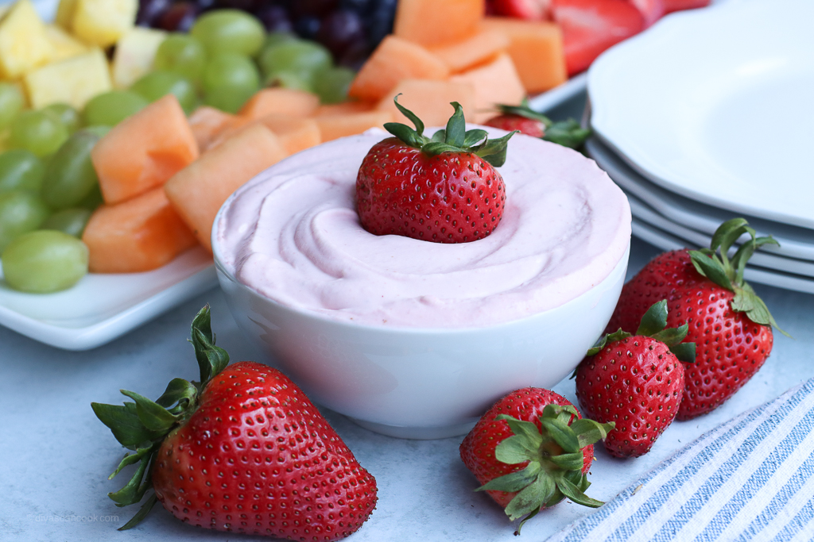

Fruit Dip

Fruit Dip for beginners
This simple recipe can be made by anytone. It contains only two ingredients and easy to whip up for any gathering!
Ingredients
- 2x Marshmellow Dip
- 1x Philadelphia Cream Cheese Block
Steps
- Let both ingredients sit out unrefridgerated. This will make it easier to mix smooth
- Completely empty both containers of marshmellow dip into bowl
- Put one block of cream cheese into bowl with marshmellow dip
- Mix together until you achieve desired smooth consistency!